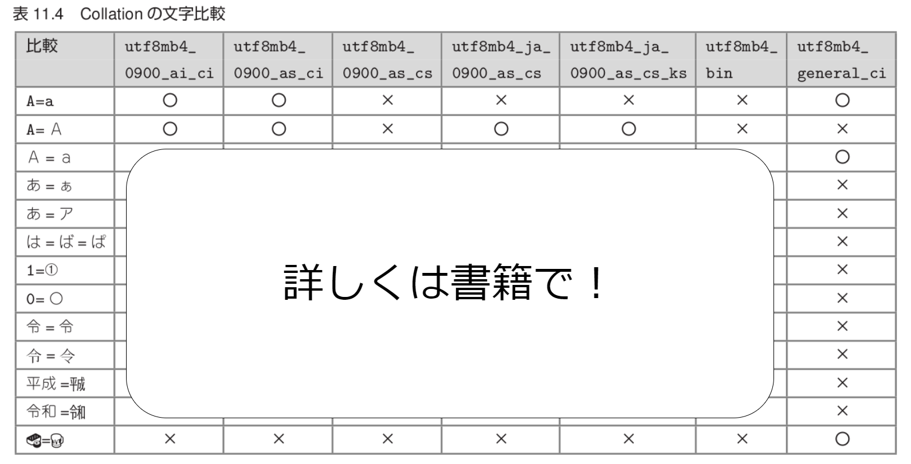

MySQL徹底入門 第4版
ユーザー管理とか文字コードとか
とみたまさひろ
2020-07-29
ニフクラエンジニアミートアップ
#nifcloud_emup
自己紹介

- とみたまさひろ @tmtms
- https://tmtms.hatenablog.com
- 日本MySQLユーザ会 (文字化け担当)
- MySQL Parameters
- 好きなMySQLの命令は
SHOW CREATE TABLE - 富士通クラウドテクノロジーズ
- ニフクラ
- いま見てる人は全員知ってるはず
- 認知度100%
執筆分
- 5 「ユーザー管理」
- 10.5 「データベースプログラミング Ruby」
- 11 「文字コードと日本語環境」
- 14 「逆引きMySQL辞典」のうちの2項目
全体の1割弱
その他、GitLab や Mattermost を用意したり
全体をレビューしたり
見どころ
認証プラグイン auth_socket
ローカルのmysqldにOSと同じユーザー名で
パスワード無しで接続できる
rootとかで便利
どうせOSのrootは何でも出来るし
パスワード管理
- 有効期限
- 期限切れだと再設定が必要
- 再利用ポリシー
- 過去N回分は再利用不可
- 過去N日分は再利用不可
- パスワード強度
- ユーザー名と同じ文字列は不可
- N文字未満は不可
- 大文字/小文字/数字/記号をそれぞれN文字必要
権限 partial_revokes
一部のDBを除くという指定が可能
GRANT SELECT ON *.* TO hoge;
REVOKE SELECT ON mysql.* FROM hoge;
ロール
ユーザーに適用する権限の集合に名前をつけたもの
複雑な権限を複数のユーザーに適用するのに便利
文字列比較
SELECT 'abc'='ABC' => ⭕
SELECT '〇'='0' => ⭕
SELECT 'うさぎさんちーむ'='ウサギ㌠' => ⭕
SELECT '平成'='㍻' => ⭕
SELECT '令和'='㋿' => ❌
なんでやねん！
というのを説明
文字列比較
SELECT * FROM tbl WHERE utf8mb4_col = _ascii'ABC' => ⭕
SELECT * FROM tbl WHERE ascii_col = _utf8mb4'ABC' => ⭕
SELECT * FROM tbl WHERE ascii_col = _utf8mb4'ほげ' => ❌
ERROR 1267 (HY000): Illegal mix of collations (ascii_general_ci,
IMPLICIT) and (utf8mb4_0900_ai_ci,COERCIBLE) for operation '='
なんでやねん！
というのを説明
ソート順
JISマニア向け utf8mb4_ja_0900_as_cs
mysql> SELECT c,HEX(c) FROM t ORDER BY c;
+------+--------+
| c | hex(c) |
+------+--------+
| 亜 | E4BA9C |
| 伊 | E4BC8A |
| 宇 | E5AE87 |
| 栄 | E6A084 | ←
| 奥 | E5A5A5 | ←
+------+--------+
ソート順
長音記号もJIS準拠
mysql> SELECT * FROM tt ORDER BY c;
+--------+
| c |
+--------+
| あー | ←「あ」よりも前
| ああ |
| あい |
| あう |
| いあ |
| いー | ←「あ」と「い」の間
| いい |
| いう |
| うあ |
| うい |
| うー | ←「い」と「う」の間
| うう |
+--------+
こんな便利な表が!

自分の担当以外のおすすめ
- 6 「MySQLの運用」
- 8 「レプリケーション」
- 9 「バックアップとリストア」
yuku0825さん担当
- 14 「逆引きMySQL辞典」
商業出版技術書と思えない文体がいい